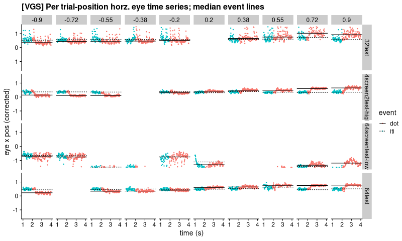
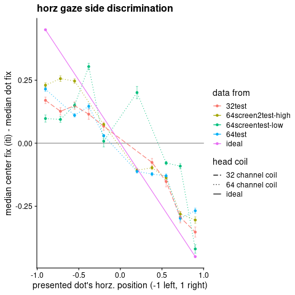
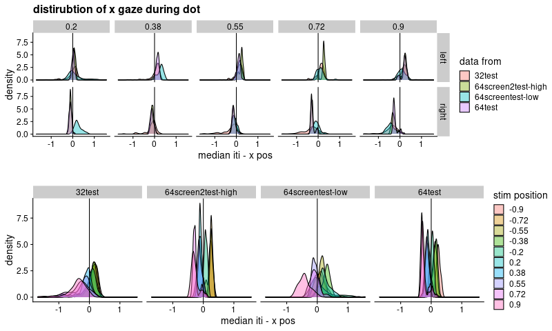
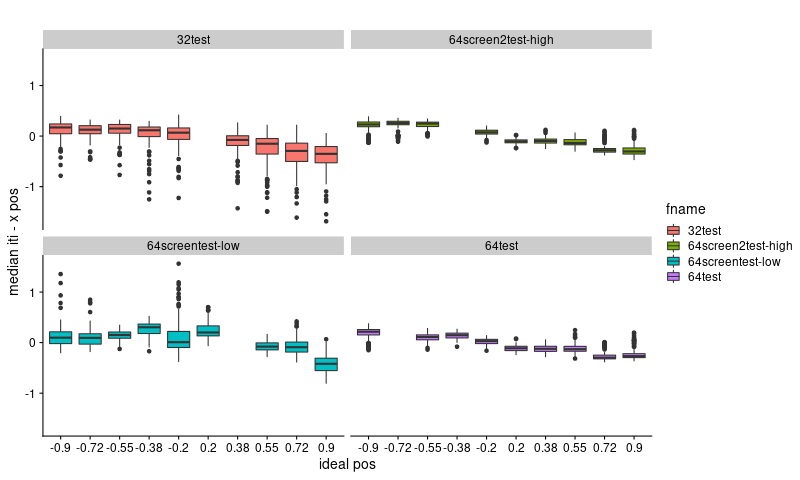
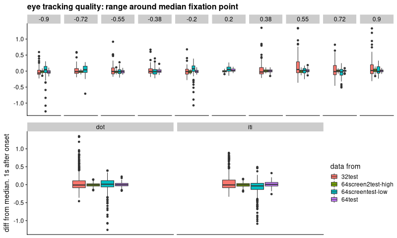
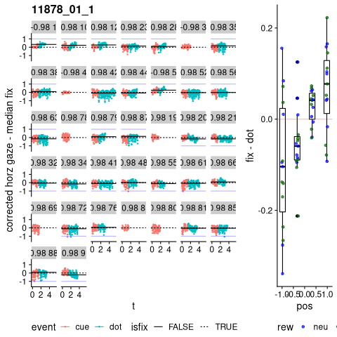
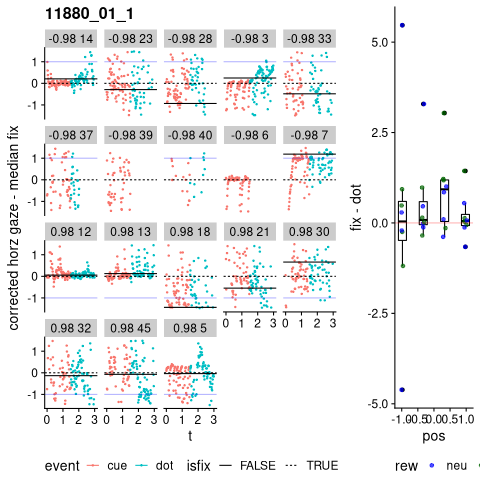
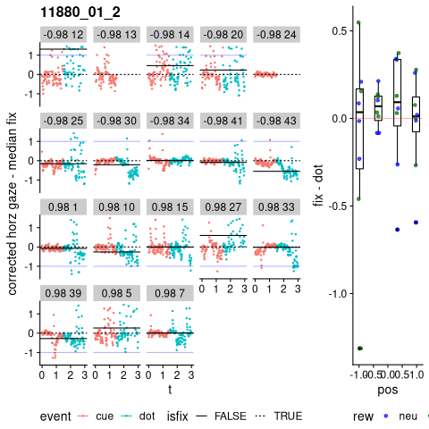

;used minted package and python-pygments (require 'ox-latex) (add-to-list 'org-latex-packages-alist '("" "minted")) (setq org-latex-listings 'minted) (setq org-latex-pdf-process '("pdflatex -shell-escape -interaction nonstopmode -output-directory %o %f" "pdflatex -shell-escape -interaction nonstopmode -output-directory %o %f" "pdflatex -shell-escape -interaction nonstopmode -output-directory %o %f"))
#+end_src
Testing with eye calibration tasks
We ran an eye calibration task first with the 32 channel head coil (once). Then with the 64 (three times).
The second 64 channel collection had the mirror tilled such that the projected screen was especially low in the field of view ("low"). The third 64 run was with the screen reflecting closer to the top of the mirror ("high"). The "high" configuration allowed a natural/less strained position in the scanner.
In 32, it was only possible to see the screen with the tracked (left) eye. The right eye's view of the screen was occluded by the coil. My pupil was reported to be constantly smaller when in the 32 channel coil. Additionally portion of the coil is unavoidably included in the tracking camera's frame.
| time(PM) | filename |
| 3:34:07 | 32test |
| 3:53:29 | 64test |
| 4:04:21 | 64screentest-low |
| 4:07:29 | 64screen2test-high |

task
The task is a visually guided saccade/fixation calibration designed to test the quality of horizonal eye position tracking.
It is short (<40s) and the participant (me) was highly motivated.
A yellow circle ("dot") appears for 2s. The small dot is positioned on the horizontal meridian from 90% left of the screen edge to 90% right excluding 20% on either side of center. A 2 second center fixation cross ("iti") is between each dot.
There should have been 10 dot events with positions evenly distributed (2s dot + 2s iti * 10 == 40s total), but the last trial was never presented. (The last screen flipped w/o a wait, so the program ended early.)
| fname | trials | time | samples |
|---|---|---|---|
| 32test | 9 | 37.8196 | 2265 |
| 64screen2test-high | 9 | 37.8697 | 2267 |
| 64screentest-low | 9 | 37.903 | 2262 |
| 64test | 9 | 37.903 | 2273 |
Quality
A quick assessment is made using median values (rough guess at fixation position) during the "dot" and "iti" events. Eye position is extracted using https://github.com/LabNeuroCogDevel/autoeyescore
Time series traces
There were two especially bad runs.
- With the 32 channel coil, arrington's ViewPoint software could not get a stable pupil lock.
- In the "low" version of 64 channel coil run, the pupil tracking was less noisy but also had frequent periods of no tracking.
d_all <- tracking_list %>% bind_rows %>% filter(!is.na(trial))
d_median <- d_all %>%
group_by(fname,trial,event,pos) %>%
summarise(x_median=median(X_CorrectedGaze,na.rm=T))
raw_plot <- ggplot(d_all) +
aes(x=t, y=X_CorrectedGaze, color=event) +
geom_point(size=.5) +
facet_grid(fname~pos) +
geom_hline(data=d_median,aes(yintercept=x_median, linetype=event)) +
lims(y=c(-1.5,1.5),x=c(1,4)) +
cowplot::theme_cowplot() +
labs(y="eye x pos (corrected)", x="time (s)",
title="[VGS] Per trial-position horz. eye time series; median event lines")
print(raw_plot)
dot distance from iti
Surprisingly, even the noisy 32 channel coil's median fixation can correctly identify at least the side of the dot during fixation.
sd_vals <- d_all %>%
group_by(fname,trial, pos) %>%
summarise(se=sd(X_CorrectedGaze)/sqrt(n()))
med_vals <- d_median %>%
spread(event,x_median) %>%
inner_join(sd_vals) %>%
mutate(dist=iti-dot) %>%
rbind(data.frame(
fname='ideal', pos=c(-.9,.9),
dist=c(.5-.05, .5-.95))) %>%
mutate(type=case_when(
grepl('64',fname)~ '64 channel coil',
grepl('32',fname)~ '32 channel coil',
grepl('ideal',fname)~ 'ideal',
TRUE ~ 'oops'))
p_med_ideal <- ggplot(med_vals) +
aes(x=pos, y=dist, color=fname, linetype=type) +
geom_hline(yintercept=0, alpha=.5) +
geom_errorbar(aes(ymin=dist-se, ymax=dist+se, linetype=NULL),
width=.025, alpha=.5) +
geom_point() +
geom_line(aes(group=fname)) +
scale_linetype_manual(values=c(5,3,1)) +
cowplot::theme_cowplot() +
labs(x="presented dot's horz. position (-1 left, 1 right)",
y="median center fix (iti) - median dot fix",
linetype="head coil",
color="data from",
title="horz gaze side discrimination")
print(p_med_ideal)
med_all <- d_all %>% inner_join(med_vals) %>%
mutate(x_norm = iti - X_CorrectedGaze,
side=ifelse(pos<0, 'left', 'right'),
loc=abs(pos))
p_distside <- med_all %>%
filter(event=='dot') %>%
ggplot() +
aes(x=x_norm, fill=fname) +
cowplot::theme_cowplot() +
geom_density(alpha=.4)+
facet_grid(side~loc) +
geom_vline(xintercept=0) +
labs(x="median iti - x pos",
title="distirubtion of x gaze during dot",
fill="data from")
p_distfname <- med_all %>%
filter(event=='dot') %>%
ggplot() +
aes(x=x_norm, fill=as.factor(pos)) +
cowplot::theme_cowplot() +
geom_density(alpha=.4)+
facet_grid(~fname) +
geom_vline(xintercept=0) +
labs(x="median iti - x pos",
title="",
fill="stim position")
cowplot::plot_grid(p_distside, p_distfname, nrow=2)
p_med_boxplot <- med_all %>% filter(event=='dot') %>%
ggplot() +
aes(x=as.factor(pos), y=x_norm, fill=fname) +
geom_boxplot() +
cowplot::theme_cowplot() +
labs(y="median iti - x pos", x="ideal pos",
title="") + facet_wrap(~fname)
print(p_med_boxplot)
#cowplot::plot_grid(
# p_med_boxplot +theme(legend.position="none") +labs(x=""),
# p_med_ideal +theme(legend.position="none"),
# nrow=2, rel_heights=c(2,1))
Noise
d_in1sec <- d_median %>%
inner_join(d_all) %>% group_by(fname, pos, trial, event) %>%
mutate(event_t=TotalTime - first(TotalTime)) %>%
filter(event_t>1)# %>%
base_box <- function(d) ggplot(d) +
aes(y=X_CorrectedGaze-x_median, fill=fname) +
geom_boxplot() +
cowplot::theme_cowplot() +
scale_x_discrete(labels = NULL, breaks = NULL) +
labs(y="diff from median. 1s after onset", fill="data from")
cowplot::plot_grid(
d_in1sec %>% filter(event=='dot') %>% base_box +
facet_grid(.~pos) + theme(legend.position="none") +
labs(y="", title="eye tracking quality: range around median fixation point"),
base_box(d_in1sec) + facet_grid(.~event),
nrow=2)
Previously collected data
We have data available for two visits. Because the second visit is noisy, the "raw" plots are normalized by the median of fixation events (all but dot). This allows the plots to fit in the small facet window. Otherwise, some visit/trials have a X_Corrected_Gaze value of -8 and others of -1.
LNCDR::ld8from(txtfiles)| 11878_20220823 |
| 11880_20220901 |
| 11880_20220901 |
11878: measurable changes from fixation
11878 was a single 8 min run with bad tracking.
But we can see the median value of dot fixation is often on the correct side of the screen :box plot centers are above 0 for negative dot position and above for positive! This is opposite of the calibration task above – that's vgs, this is anti.
I don't think we can easily distinguish between bad tracking and an incorrect response. And there is little hope of getting location precision or saccade latency.
The current strategy for "scoring" (median of center vs dot fix) has a lot of room to improve. E.g. we could look at horz eye position after .5s and before 1s to exclude the actual saccades from fixation values. In either case, this depends more on the participant doing the task well. With good tracking, we can look at saccades instead of averages.
plot_overview(dr_list[[1]])
11880 Too noisy
11880 has noisy data. Small head with coil center obstructing eye. Participant might have also ignored all neutral trials. complicating averaging.
plot_overview(dr_list[[2]])
plot_overview(dr_list[[3]])